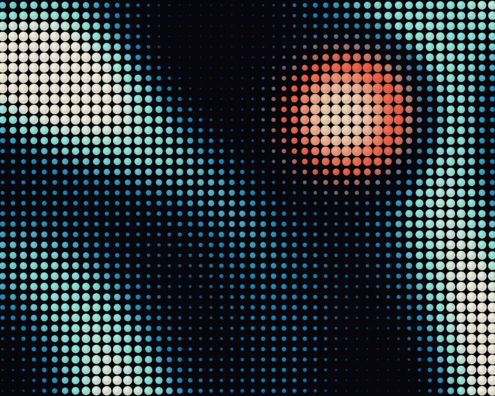

Dot-matrix wave
Dot-matrix wave is a WebGL effect: one disc per cell, sized and coloured by rolling waves. One plain JavaScript file with no dependencies; add it with npx motion-library add dot-matrix-wave.

Open it live, tune it and copy the code
What is Dot-matrix wave?
A grid of dots breathes in rolling bands; the cursor raises a hot dome with a moat.
How does Dot-matrix wave work?
Each pixel finds its cell, samples a height field of plane and circular waves at the centre, and draws one anti-aliased disc sized and coloured by it.
How do I add Dot-matrix wave to my website?
- In your project folder, run
npx motion-library add dot-matrix-wave. It writesanimations/dot-matrix-wave.js. Needs Node 18 or newer. - Import it and call it with a container element that has a size:
import fx from './animations/dot-matrix-wave.js'; const stop = fx(document.querySelector('#hero')); - Call
stop()to clean up, for example when a component unmounts.
Every setting below is also a flag, so you can install it already tuned: npx motion-library add dot-matrix-wave --cells 80.
What settings can I tweak?
| Setting | Flag | Default | Range | Step |
|---|---|---|---|---|
| Dots per column | --cells | 38 | 16 to 80 | 1 |
| Wave strength | --amp | 1 | 0 to 1.5 | 0.05 |
| Speed | --speed | 1 | 0 to 3 | 0.05 |
Specifications
- Renderer
- WebGL
- Category
- Generative & math
- Dependencies
- None
- File size
- 6.8 KB, unminified
- Interactive
- Yes: it responds to the pointer
- Reduced motion
- Respects prefers-reduced-motion
- Licence
- MIT-0: use it anywhere, no credit needed
Source code
// Dot-matrix wave: a square grid of round dots, one per cell, where each dot's radius and colour read a height
// field made of a few rolling waves (two plane waves and a circular one, slightly bent by each other). Every pixel
// works out which cell it is in, samples the field at that cell's centre and draws one anti-aliased disc, so the
// picture is pure size-and-colour modulation, like an LED board or a halftone that breathes. The pointer (or an
// idle ghost) raises a bulge: dots under it swell, lift towards white-hot and the wave around them is pushed outwards.
const PARAMS = { cells: 38, amp: 1, speed: 1 };
export default function (stage) {
const canvas = document.createElement('canvas');
canvas.style.cssText = 'position:absolute;inset:0;width:100%;height:100%;display:block';
stage.append(canvas);
const gl = canvas.getContext('webgl2', { antialias: false });
if (!gl) { stage.textContent = 'This needs WebGL2.'; return () => canvas.remove(); }
const reduce = matchMedia('(prefers-reduced-motion: reduce)').matches;
const vs = `#version 300 es
in vec2 p; void main() { gl_Position = vec4(p, 0, 1); }`;
const fs = `#version 300 es
precision highp float; out vec4 o;
uniform vec2 R, M; uniform float T, D, MA, u_cells, u_amp, u_speed;
float hash(vec2 p) { return fract(sin(dot(p, vec2(127.1, 311.7))) * 43758.5453); }
vec2 hash2(vec2 p) { return fract(sin(vec2(dot(p, vec2(127.1, 311.7)), dot(p, vec2(269.5, 183.3)))) * 43758.5453); }
float noise(vec2 p) { vec2 i = floor(p), f = fract(p); f = f * f * (3. - 2. * f);
return mix(mix(hash(i), hash(i + vec2(1, 0)), f.x), mix(hash(i + vec2(0, 1)), hash(i + 1.), f.x), f.y); }
float fbm(vec2 p) { float s = 0., a = .5; mat2 m = mat2(1.6, 1.2, -1.2, 1.6); for (int i = 0; i < 5; i++) { s += a * noise(p); p = m * p; a *= .5; } return s; }
vec3 ramp(float v) {
vec3 a = vec3(.06, .09, .30), b = vec3(.05, .55, .78), c = vec3(.55, .95, .90), d = vec3(1., .97, .90);
return v < .45 ? mix(a, b, smoothstep(0., .45, v)) : v < .8 ? mix(b, c, smoothstep(.45, .8, v)) : mix(c, d, smoothstep(.8, 1., v));
}
void main() {
vec2 p = (gl_FragCoord.xy - .5 * R) / R.y;
float cs = 1. / u_cells;
vec2 g = p / cs, id = floor(g) + .5, f = g - id, c = id * cs;
// the bulge: a soft dome around the pointer that also pushes the wave out radially
vec2 dm = c - M; float r2 = dot(dm, dm), bulge = exp(-r2 * 30.);
vec2 q = c - dm * bulge * .9;
float bend = sin(q.y * 4.1 + T * .5) * 1.2;
float w = .5 * sin(q.x * 6.5 - T * 1.5 + bend) + .3 * sin(dot(q, vec2(.6, .8)) * 9. + T * 1.1)
+ .35 * sin(length(q - vec2(-.75, -.55)) * 13. - T * 2.3);
w = smoothstep(.12, .92, .5 + .5 * w / 1.15); // sharpen the crests so the waves read as bands
w = .5 + (w - .5) * u_amp;
float moat = exp(-pow(sqrt(r2) - .2, 2.) * 260.); // the dome pushes a shallow trough out around itself
float v = clamp(w * (1. - .75 * moat) + bulge * .8, 0., 1.);
float rad = min(.49, mix(.07, .47, pow(v, 1.15)) + bulge * .06);
float px = u_cells / R.y; // one pixel, in cell units
float d = length(f) - rad;
float disc = smoothstep(px, -px, d);
vec3 col = ramp(v);
vec3 hot = mix(vec3(1., .36, .24), vec3(1., .88, .74), smoothstep(.55, 1., bulge));
col = mix(col, hot, smoothstep(.12, .6, bulge)); // the bulge runs hot
float hl = smoothstep(rad, 0., length(f - vec2(-.12, .14) * rad / .47)) * .12; // a little highlight on each dot
vec3 bg = vec3(.018, .02, .035) + vec3(.03, .05, .1) * exp(-length(f) * 6.) * v; // faint glow in the gaps
vec3 o3 = mix(bg, col * (.85 + hl), disc);
o = vec4(pow(o3, vec3(.95)), 1);
}`;
const sh = (t, s) => { const x = gl.createShader(t); gl.shaderSource(x, s); gl.compileShader(x); if (!gl.getShaderParameter(x, gl.COMPILE_STATUS)) throw new Error(gl.getShaderInfoLog(x)); return x; };
const prog = gl.createProgram(); gl.attachShader(prog, sh(gl.VERTEX_SHADER, vs)); gl.attachShader(prog, sh(gl.FRAGMENT_SHADER, fs)); gl.bindAttribLocation(prog, 0, 'p'); gl.linkProgram(prog);
if (!gl.getProgramParameter(prog, gl.LINK_STATUS)) throw new Error(gl.getProgramInfoLog(prog));
gl.useProgram(prog);
gl.bindBuffer(gl.ARRAY_BUFFER, gl.createBuffer()); gl.bufferData(gl.ARRAY_BUFFER, new Float32Array([-1, -1, 3, -1, -1, 3]), gl.STATIC_DRAW);
gl.enableVertexAttribArray(0); gl.vertexAttribPointer(0, 2, gl.FLOAT, false, 0, 0);
const U = {}; ['R', 'M', 'T', 'D', 'MA', 'u_cells', 'u_amp', 'u_speed'].forEach(n => U[n] = gl.getUniformLocation(prog, n));
let dpr = 1;
const resize = () => { dpr = Math.min(devicePixelRatio, 2); canvas.width = (stage.clientWidth || 1) * dpr | 0; canvas.height = (stage.clientHeight || 1) * dpr | 0; gl.viewport(0, 0, canvas.width, canvas.height); };
const ro = new ResizeObserver(resize); ro.observe(stage); resize();
// the pointer, in shader space (units of stage height, origin at the centre, y up); an idle "ghost" takes over
// when nobody is pointing, so the card is never static
let tx = 0, ty = 0, mx = 0, my = 0, ma = 0, lastMove = -1e9, gt = 0;
const toLocal = e => { const b = canvas.getBoundingClientRect(); return [(e.clientX - b.left - b.width / 2) / b.height, (b.height / 2 - (e.clientY - b.top)) / b.height]; };
const onMove = e => { [tx, ty] = toLocal(e); lastMove = performance.now(); };
const onLeave = () => { lastMove = -1e9; };
const onDown = e => { onMove(e); };
canvas.addEventListener('pointermove', onMove); canvas.addEventListener('pointerdown', onDown); canvas.addEventListener('pointerleave', onLeave);
let raf, t = 0, last = performance.now();
function frame(now) {
const dt = Math.min(0.05, (now - last) / 1000); last = now;
t += dt * PARAMS.speed * (reduce ? 0.05 : 1);
const live = now - lastMove < 2500, asp = canvas.width / canvas.height;
if (!reduce) gt += dt;
if (!live) { tx = asp * 0.3 * Math.sin(gt * 0.41) + 0.06 * Math.sin(gt * 1.3); ty = 0.24 * Math.sin(gt * 0.67 + 1.2); }
const k = 1 - Math.exp(-dt * (live ? 14 : 3));
mx += (tx - mx) * k; my += (ty - my) * k; ma += ((live ? 1 : 0) - ma) * (1 - Math.exp(-dt * 4));
gl.uniform2f(U.R, canvas.width, canvas.height); gl.uniform1f(U.T, t); gl.uniform1f(U.D, dpr);
gl.uniform2f(U.M, mx, my); gl.uniform1f(U.MA, ma);
gl.uniform1f(U.u_cells, PARAMS.cells);
gl.uniform1f(U.u_amp, PARAMS.amp);
gl.uniform1f(U.u_speed, PARAMS.speed);
gl.drawArrays(gl.TRIANGLES, 0, 3);
raf = requestAnimationFrame(frame);
}
raf = requestAnimationFrame(frame);
return () => { cancelAnimationFrame(raf); ro.disconnect(); canvas.removeEventListener('pointermove', onMove); canvas.removeEventListener('pointerdown', onDown); canvas.removeEventListener('pointerleave', onLeave); gl.getExtension('WEBGL_lose_context')?.loseContext(); canvas.remove(); };
}